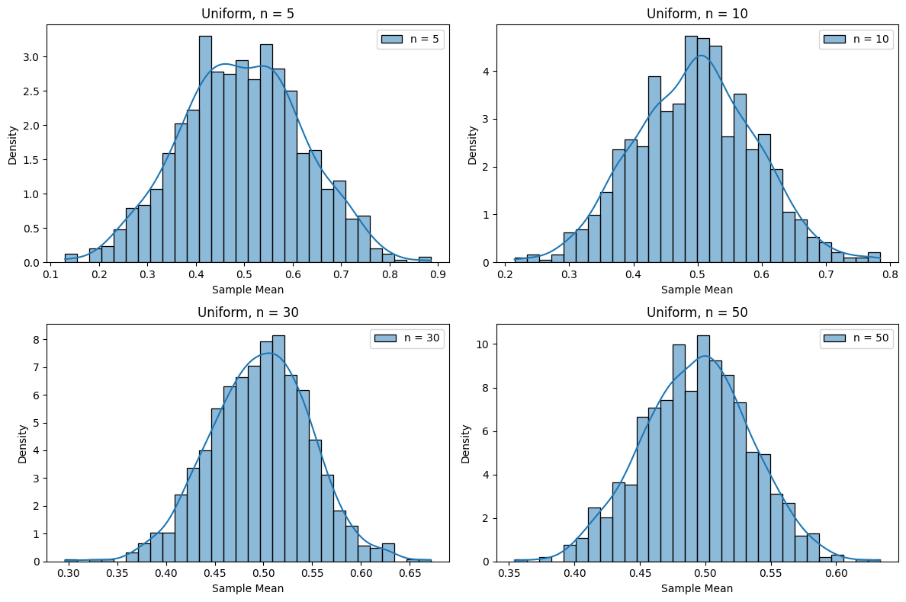
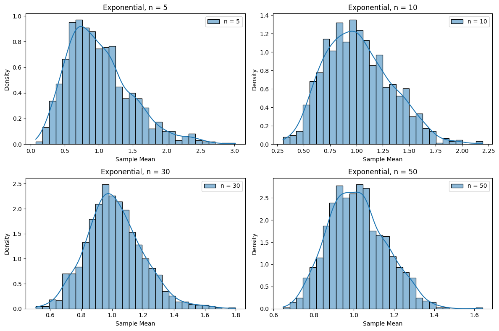

Problem 1
Step-by-Step Solution: Exploring the Central Limit Theorem through Simulations
Step 1: Simulating Sampling Distributions
The Central Limit Theorem (CLT) is a fundamental concept in statistics and probability theory. It states that the distribution of the sample means (i.e., the average of a sample) taken from any population will tend to follow a normal distribution as the sample size \(n\) increases, regardless of the shape of the population distribution, provided the population has a finite mean and variance. Mathematically, if we take a sample of size \(n\) from a population with mean \(\mu\) and standard deviation \(\sigma\), the distribution of the sample mean \(\bar{X}\) will approximately follow a normal distribution with mean \(\mu\) and standard deviation \(\frac{\sigma}{\sqrt{n}}\) for large \(n\):
This property holds even if the population distribution is not normal (e.g., uniform, exponential, or binomial), making the CLT a powerful tool for statistical inference.
To explore this theorem, we will simulate three types of population distributions with different shapes to demonstrate the CLT's universality:
-
Uniform Distribution: A continuous distribution where all values between a minimum (0) and maximum (1) are equally likely. The probability density function (PDF) is: $$ f(x) = \begin{cases} 1 & \text{for } 0 \leq x \leq 1 \ 0 & \text{otherwise} \end{cases} $$ The mean of a uniform distribution on \([0, 1]\) is \(\mu = \frac{0 + 1}{2} = 0.5\), and the standard deviation is \(\sigma = \frac{1 - 0}{\sqrt{12}} = \frac{1}{\sqrt{12}} \approx 0.2887\).
-
Exponential Distribution: A continuous distribution often used to model the time between events in a Poisson process (e.g., waiting times). Its PDF is: $$ f(x) = \lambda e^{-\lambda x}, \quad x \geq 0 $$ We use \(\lambda = 1\), so the mean is \(\mu = \frac{1}{\lambda} = 1\), and the standard deviation is \(\sigma = \frac{1}{\lambda} = 1\). This distribution is heavily right-skewed, meaning it has many small values and a long tail of larger values.
-
Binomial Distribution: A discrete distribution representing the number of successes in \(n_{\text{trials}}\) independent trials, each with success probability \(p\). The probability mass function (PMF) is: $$ P(X = k) = \binom{n_{\text{trials}}}{k} p^k (1 - p)^{n_{\text{trials}} - k} $$ We use \(n_{\text{trials}} = 10\) and \(p = 0.5\), so the mean is \(\mu = n_{\text{trials}} \cdot p = 10 \cdot 0.5 = 5\), and the standard deviation is \(\sigma = \sqrt{n_{\text{trials}} \cdot p \cdot (1 - p)} = \sqrt{10 \cdot 0.5 \cdot 0.5} = \sqrt{2.5} \approx 1.581\).
For each of these distributions, we will perform the following steps:
-
Generate a Population: Create a large population of 10,000 values to represent the "true" distribution. This large size ensures that our population is a good approximation of the theoretical distribution.
-
Take Samples: For each sample size \(n \in \{5, 10, 30, 50\}\), draw 1,000 samples of size \(n\) from the population. A sample of size \(n\) means we randomly select \(n\) values from the population (with replacement, to mimic independent sampling).
-
Compute Sample Means: For each of the 1,000 samples, calculate the sample mean \(\bar{x}\), defined as: $$ \bar{x} = \frac{1}{n} \sum_{i=1}^n x_i $$ where \(x_i\) are the values in the sample. This gives us 1,000 sample means for each \(n\).
The goal is to observe how the distribution of these sample means approaches a normal distribution as \(n\) increases, which is the core idea of the CLT.
Step 2: Sampling and Visualization
To confirm the CLT, we will visualize the distribution of the sample means using histograms. A histogram shows the frequency of different values of the sample means, and we will overlay a kernel density estimate (KDE) to smooth the histogram and better visualize the shape of the distribution. According to the CLT, as \(n\) increases, the histogram of sample means should resemble a normal distribution, which has the following probability density function (PDF):
where \(\mu\) is the mean of the sample means (which should equal the population mean \(\mu\)), and \(\sigma\) is the standard deviation of the sample means (which should equal the population standard deviation divided by \(\sqrt{n}\), i.e., \(\frac{\sigma}{\sqrt{n}}\)).
We will create four subplots for each population (one for each sample size \(n\)), showing how the distribution of sample means changes as \(n\) increases. The KDE curve on the histogram will help us visually compare the shape to a normal distribution.
Python Code: Simulation and Visualization of Sampling Distributions
import numpy as np
import matplotlib.pyplot as plt
import seaborn as sns
# Simulation parameters
np.random.seed(42) # For reproducibility
population_size = 10000 # Population size
num_samples = 1000 # Number of samples
sample_sizes = [5, 10, 30, 50] # Sample sizes
# Populations
uniform_pop = np.random.uniform(0, 1, population_size) # Uniform distribution
exponential_pop = np.random.exponential(scale=1, size=population_size) # Exponential
binomial_pop = np.random.binomial(n=10, p=0.5, size=population_size) # Binomial
# List of populations for analysis
populations = [
("Uniform", uniform_pop),
("Exponential", exponential_pop),
("Binomial", binomial_pop)
]
# Simulation and visualization
for pop_name, pop_data in populations:
plt.figure(figsize=(12, 8))
for i, n in enumerate(sample_sizes, 1):
# Generate samples and compute means
sample_means = [np.mean(np.random.choice(pop_data, size=n)) for _ in range(num_samples)]
# Plot histogram
plt.subplot(2, 2, i)
sns.histplot(sample_means, bins=30, stat="density", kde=True, label=f"n = {n}")
plt.title(f"{pop_name}, n = {n}")
plt.xlabel("Sample Mean")
plt.ylabel("Density")
plt.legend()
plt.tight_layout()
plt.show()



Explanation of the Code
- Parameters: We set the population size (10,000), number of samples (1,000), and sample sizes (5, 10, 30, 50).
- Populations: We generate three distributions: uniform, exponential, and binomial.
- Simulation: For each sample size \(n\), we take 1,000 samples from the population and compute the mean.
- Visualization: We plot histograms with a kernel density estimate (KDE) to show how the distribution of sample means approaches normality as \(n\) increases.
Step 3: Parameter Exploration
- Shape of the Original Distribution:
- Uniform: Initially flat (all values from 0 to 1 are equally likely). The sample means become normal even at \(n = 10\).
- Exponential: Initially skewed (many small values, few large ones). At \(n = 5\), the distribution of means is still skewed, but by \(n = 50\), it is nearly normal.
- Binomial: Initially discrete (values from 0 to 10). By \(n = 30\), the distribution of means looks normal.
- Sample Size \(n\): Larger \(n\) leads to a distribution of means that is closer to normal, confirming the CLT.
- Population Variance: The exponential distribution has higher variance, so its convergence to normality is slower compared to the uniform distribution.
Step 4: Practical Applications
- Parameter Estimation: The CLT allows us to estimate population means (e.g., average height of people) using sample means.
- Quality Control: In manufacturing, the CLT ensures that sample means (e.g., weight of parts) follow a normal distribution, aiding in quality checks.
- Financial Models: The CLT is used to predict stock returns, as average returns tend to follow a normal distribution.
Step 5: Conclusions
The simulations demonstrate that the CLT holds for various population distributions. Even when the original distribution is far from normal (e.g., exponential), increasing the sample size \(n\) results in a normal distribution of sample means. This makes the CLT a powerful tool in statistics for making inferences about populations based on samples.